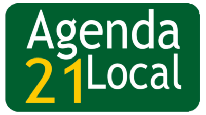

O que é a Agenda 21 local?
|
A Agenda 21 Local é um instrumento de planejamento de políticas públicas que envolve tanto a sociedade civil e o governo em um processo amplo e participativo de consulta sobre os problemas ambientais, sociais e econômicos locais e o debate sobre soluções para esses problemas através da identificação e implementação de ações concretas que visem o desenvolvimento sustentável local. |
 |
Quais são os principais desafios?
Os principais desafios da Agenda 21 Local consistem no planejamento voltado para a ação compartilhada, na construção de propostas pactuadas, voltadas para a elaboração de uma visão de futuro entre os diferentes atores envolvidos; condução de um processo contínuo e sustentável; descentralização e controle social e incorporação de uma visão multidisciplinar em todas as etapas do processo. Desta forma, governo e sociedade estão utilizando este poderoso instrumento de planejamento estratégico participativo para a construção de cenários consensuados, em regime de co-responsabilidade, que devem servir de subsídios à elaboração de políticas públicas sustentáveis, orientadas para harmonizar desenvolvimento econômico, justiça social e equilíbrio ambiental.
É importante que a noção de "processo contínuo" esteja associada à Agenda 21, que não deve ser entendida como um único acontecimento, documento ou atividade. No processo de desenvolvimento de uma Agenda 21 Local, a comunidade identifica suas potencialidades, seus recursos e suas fragilidades. Dessa forma, estará apta a fazer as escolhas para construir as bases de uma sociedade sustentável.
Agenda 21 Passo a Passo:
1º Passo:
Mobilizar para Sensibilizar Governo e Sociedade2º Passo:
Criar o Fórum da Agenda 21 Local3º Passo:
Elaborar o Diagnóstico Participativo4º Passo:
Elaborar Plano Local de Desenvolvimento Sustentável5º Passo:
Implementar o Plano Local de Desenvolvimento Sustentável6º Passo:
Monitorar e Avaliar o Plano Local de Desenvolvimento SustentávelComo participar?
Para construir a Agenda 21 Local, o Programa Agenda 21 do MMA publicou o Passo-a-Passo da Agenda 21 Local, que propõe um roteiro organizado em seis etapas: mobilizar para sensibilizar governo e sociedade; criar um Fórum de Agenda 21 Local; elaborar um diagnóstico participativo; e elaborar, implementar, monitorar e avaliar um plano local de desenvolvimento sustentável.
Além disso, para que o público possa saber mais sobre as experiências de Agenda 21 Local no Brasil, o MMA criou o Sistema Agenda 21 – um banco de dados de gestão descentralizada que permite o compartilhamento de informações.